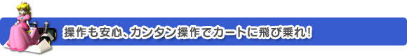
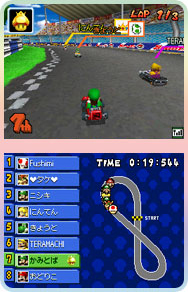
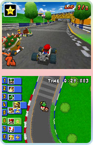
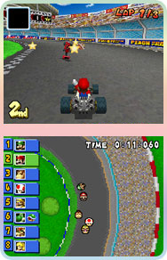
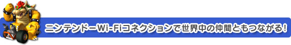
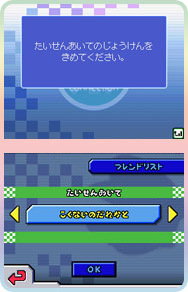
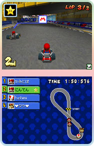

今回のマリオカート、ハードがＤＳです。私はレースゲームというと据え置き型か筐体のイメージがあり、操作性は大丈夫なのかなーと心配していました。
元々こういった操作が上手い人は心配なさそうですが、レースで十字ボタンを使った操作ってどうなんだろう？ と、気後れしつつスタート。
アクセルはＡボタン、基本的に押しっぱなしです。方向を変えるのに十字ボタンで、これが非常にスムーズ。
微妙な入力が必要なわけでもなく、あれ？ カンタンかも！
ということで、初チャレンジの１人用モードはお陰様で無事にクリアー。走るたびにコースにも慣れて、どんどん上手くなっていくのがわかります。
もちろん、選ぶキャラクターとそれに伴うカートの選択で、多少はレース内容も変わってくるでしょう。
色々なキャラを試し、最終的にヨッシーとルイージ（どちらも緑つながり）で迷いましたが、ルイージの方が私は使いやすかったですね。
軽量タイプが好きだというだけの、あくまで個人的な好みですけどね。
でも最初はキャラだなんだということを気にしないで、ただコースとアイテムの使い方に慣れる方がいいかも。
いや、初めは余裕がなくてそれしか出来ないということなのですが。
１人用モードの内容もかなり多彩なので、いそいそと修練を積み、来たるべき対戦の日に備えるわけですね。
|
|


|


ここで通信対戦の様子をお伝えしましょう。
ひとことで言うなら「非常に熱い！」。
今回は同じ室内での４人対戦をしたのですが、思わず大声が上がり、私は相当うるさかったと思います。
慣れない対戦ながらも、意地でなんとか３位辺りをキープして走っていたら、ここで新登場のアイテムである"ゲッソー"を誰か（誰が使ったのか、見る余裕がゼロでした）が使用。
ヌッと現れたゲッソーにイカスミを吐かれて、画面が真っ黒にー！ ギャー見えないー!! 誰がこんなことをー!! と叫んじゃいました。
こんな時は、下画面に表示されているコースマップを見ると、自分が現在どこをどう走っているかが把握できます。賢く利用しましょう。
ニンテンドーWi-Fiコネクションを使うと、『友達と』、『ライバルと』、そして登録してある『国内のだれかと』『世界のだれとでも』という４つの選択で通信対戦が可能です。まずは友達同士で切磋琢磨して、強くなってきたかなという所で国内レースに進出。そこで今度は世界を相手に戦う…ってカッコイイじゃありませんか。
また、『ライバルと』を選べば、同じくらいの腕前のプレイヤーと対戦することもできるし、レースの熱さを本当に体感できるのが最も大きなポイントだと思います。
というわけでみなさん、ニンテンドーWi-Fiコネクションを使った通信対戦で、ぜひ世界の頂点を目指しましょう!!
|
|

|
|